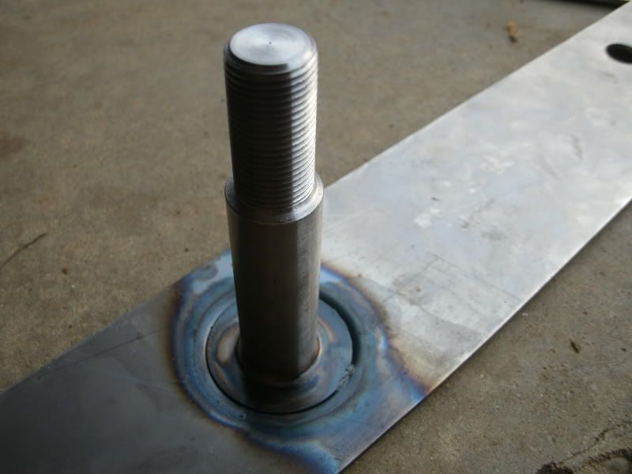
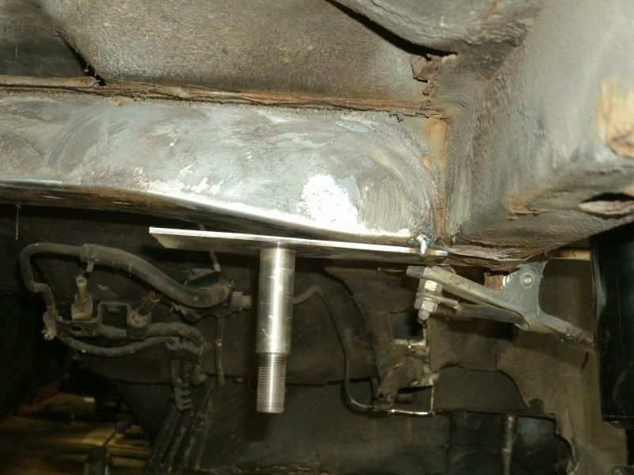

-
still havn`t even opened the box. since my father in law died recently, i have been tasked with clearing out his stuff. i highly respect the man, however, he was a borderline hoarder. so far, a 12x8 enclosed trailer of stuff to the local masons for them to sell/give to charity as they see fit, a 12x8 you fill/we haul bag from home depot, just filled a tow behind dump trailer and i still have to finish the second shed (where all the tools are), the garage, the interior laundry room and then there is still the old garage space with a tube fame 69 mustang they were building. anybody want to buy a Frankland quick change rear end? i make you good offer…Butter wrote: So how many of you guys are done......?
needless to say, the z is on hold. again.
Exercising my constitutional right to be awesome
good thing....1.5.2. Podium winning cars do NOT need to be running at the checkered flag -
Below are some instructions I put together for installing the kit. Let me know if you have any questions. This stuff is mostly self explanatory/learn as you go, but I figured I would at least show the steps I took.
â¢Read through all steps before starting
â¢Good welding skills are required. 220v MIG welder is suitable. TIG is recommended
Kit Contents:
Procedure
1. Remove Z31 components:
a.Rear suspension/driveline
b.Fuel tank
c.Exhaust
2. Completely strip your subframe of all bolted on components. Save all components and hardware.
3. Remove OEM rubber bushings from subframe using your preferred method.
a.I suggest using a torch (MAP or Oxy-acetylene) to burn out the rubber bushings
b.Clean out any rubber or paint
4.Cut the front mount of the subframe in half per picture below. A hacksaw works fine.
5.At this point, I recommend media-blasting the entire subframe so itâs nice and clean. At minimum you will need to clean the front mount for welding
6.Install your rear bushings
a.Depending on brand, these will likely be a light press fit into the subframe
b.If using offset bushings, be sure to align them properly before pressing in
7.Test fit rear bar
a.bar should fit up onto OEM Z31 diff mount studs
b.This is a precision fit, and not all chassis are identical. In some cases, holes in rear bar may need slight filling to fit over OEM diff mount studs
8.Weld rear studs to bar
a.Drop studs into rear bushings on subframe, thread side down
b.Lay rear bar across studs, aligning large holes in rear bar with stud head. Orientation is not important.
c.Perform fillet weld between studs and rear bar on top side only.

9. Install your front bushings into the tubes
a.Again, depending on brand, these will likely be a press fit into the tubes.
b.I used a hydraulic shop press for my STANCE bushings. Itâs designed to be a tight fit.
10. Test fit subframe/rear bar assembly into chassis
a.Install rear bar/studs assembly into subframe with C-channel pieces.
b.Lift subframe into car and align holes in rear bar with OEM diff mount studs. Support subframe in this location.
c.Raise front of subframe into approximate location for fitting up front extensions.
d.You may need to hammer/clearance a bit of the chassis underside for the subframe humps (axle pass through humps)
11. Notch chassis of Z31- This is where some thinking and trial and error is required on your part
a.You need to notch accordingly so that the front mount will align to the OEM chassis stud as shown below. Note the OEM rubber disk is retained at the top of the mount, and the OEM lower bracket is retained under the mount.
b.Note that the U-shape pieces must be aligned with the bottom of the tube, and the top of the subframe âcupâ This sets subframe tilt and varies your anti-squat.

c.Here is an example of the notching I did to achieve clearance. Notice the large notches for the camber and traction rod arms. If these arenât properly sized/place the arms will hit the chassis during suspension movement.
d.Mark the areas which need notching, remove the subframe, and cut the notches. Do not weld them shut until your final assembly. Continue to test fit/remove/notch until you can get your front extensions to align as shown in step 11b.
12. Weld it in
a.With the subframe in the car and the front extensions aligned per step 11b, tack weld the U-shape piece to the subframe. Tack weld the tube to the U-shape piece. Also tack weld the rear bar into the car (do not weld the C-channels yet).
b.Remove the subframe from the car and finish welding the front extensions. Apply the top and bottom gussets to box in the front extensions


c.Cut the rear bar down and finish welding it in


d.Throughout that whole process ^ I suggest doing about a million test fits and alignment checks. If your welding warps something or the alignment is off, the subframe will be very difficult to align and lift into place.
13. Finish your notches
a.Lift your subframe into place and install as if the job is done. Begin attaching the arms and swinging them through their travel. This will identify further notching required.
b.Remove everything again and weld up your notches. I bent up 16ga steel into C-shape pieces to fit into the ânotchâ and welded them solid.
14. Secure the subframe
a.Paint your subframe so it doesnât rust. Paint the underside of your chassis too.
b.Coat the front and rear studs with Anti-seize and lift the subframe into place. Torque down the included fasteners onto the rear studs. Re-use the OEM hardware up front.
c.Begin attaching all of your arms, install the diff, brakes, put the gas tank back in, measure for a custom driveshaft, etc etc."produce first.talk second." -
OEM Rubber disc? Shit… Threw those away and kept the metal portion for subframe bushing install:Note the OEM rubber disk is retained at the top of the mount, and the OEM lower bracket is retained under the mount.
Here's the part on courtesy nissan:
http://www.courtesyparts.com/55464-stop … 48528.html -
Come-on now you should never through anything away you might use.LOL
I kept mine and reused them as Mike stated.
At the time I did mine I used SPL bushings and they came with rubbers.88na2T-s13,q45 swap 12.6@110mph
87T 2+2 auto,stock -
JUST ASKING A QUESTION:
Mike, I'm not sure if this makes a difference- but since the rear has the stud locating bar that uses the factory diff holes… shouldn't the rear be welded up before determining the angle/placement of the front tubes, which have more room for error? In your instructions, you did the fronts first, and that seems backwards because of the location plate. -
What would welding it help? It is located using the old diff studs, it will be a tight fit, so it's not going anywhere.1985 NA2T(now RB) * 1988 SS x2 * 1984 AE x3 * 2006 350Z

-
You need to tack both in place at the same time. With the subframe in the car and supported, tack the rear bar and front extensions in place. Then remove subframe and weld remainder.
I recommend a series of test fits between tack and weld, get it perfect. Also, always strip the subframe down to install it, so its easy to manuever. 2 people makes it much easier to lift into place also."produce first.talk second." -
soo ready for this kit to be on the "Public Market"......
FMLsigpic
NWN Moderator
FertilePower on XboxLive -
:super Nice!
"Let's play Battleship! There's enough Z's for that.."
My thread thingy: http://z31performance.com/showthread…ep-Zed-84Zed31 -
I used a tranny jack and tie straps to do this conversion and a measuring tape.
You will like it when it is done, Don't over think it.
I did mine different, because there was no kit.
Good job Mike.88na2T-s13,q45 swap 12.6@110mph
87T 2+2 auto,stock -
Not sure if you noticed in the instructions, but during the final stages when the finish welds are made- the fronts are done first and the rear is no longer centered using the bar at the back- all that's holding it is the tack weld on the opposite side of where there could be some movement…OK85ZX wrote: What would welding it help? It is located using the old diff studs, it will be a tight fit, so it's not going anywhere.
It's just a suggestion- I was thinking maybe the rears should be welded in completely first since as you said, it will be a tight fit. -
Maybe I'm misunderstanding what you are saying, but my response to what I think you are saying is: If you are worried about something loosening and becoming unaligned post tac welding, then your tac welds are the problem and not the order of steps you are doing.1985 NA2T(now RB) * 1988 SS x2 * 1984 AE x3 * 2006 350Z
-
Like you said, tight fit- Rears should be welded completely and tested once more before finish welding the front due to more complexity of front parts. I think that makes a bit more sense. But I'm not here to argue. I know how to weld fine. And that's why I suggested it. -
I get what you're saying, because the rears already have a set place to weld. I'm going to do it that way. Tack in the rear bar on to the chassis, place in and align subframe, tack in fronts, remove and weld. If that makes any sense, haha.Careless wrote: Like you said, tight fit- Rears should be welded completely and tested once more before finish welding the front due to more complexity of front parts. I think that makes a bit more sense. But I'm not here to argue. I know how to weld fine. And that's why I suggested it.
"Let's play Battleship! There's enough Z's for that.."
My thread thingy: http://z31performance.com/showthread…ep-Zed-84Zed31 -
These are dumb comments that no one installing this kit should care about. You guys are space shuttling. If you bought the kit and are seriously considering installing it, you must be competent enough to weld it in without any of my instruction. I merely posted to show you how I did it, or how I would suggest doing it. Here is one of my post tack, pre weld test fits:

There are hundreds of other details that won't or shouldn't be explained. You will figure it out as you go."produce first.talk second."

Copyright © 2006–. All rights reserved. Privacy Policy